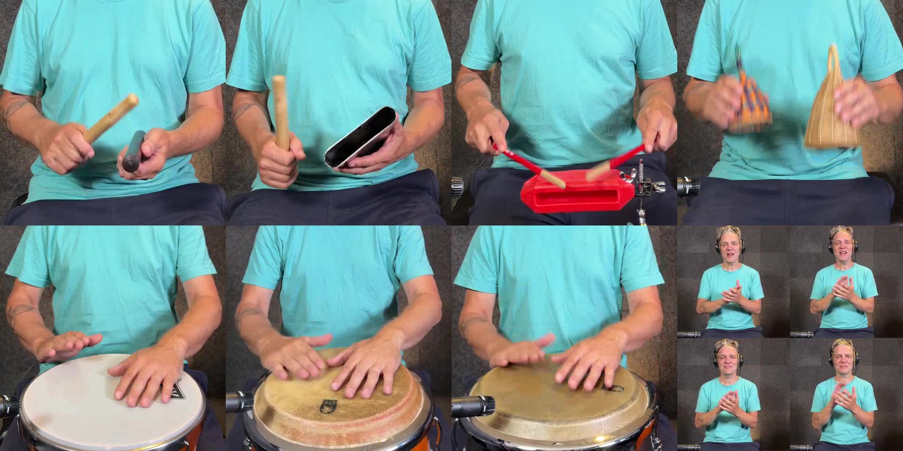

Clave
0.000 / 45.600
Tap Play. The first tap prepares the selected tempo and starts automatically.
Tap a square to select focus. Mute remains instantaneous. Tempo presets are pitch-correct: 25, 50, 75 and 100%.
Ready to start
